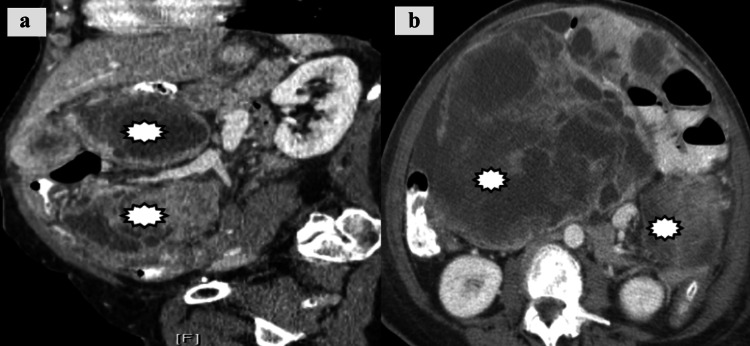
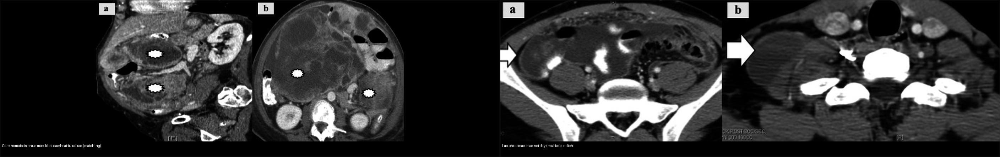
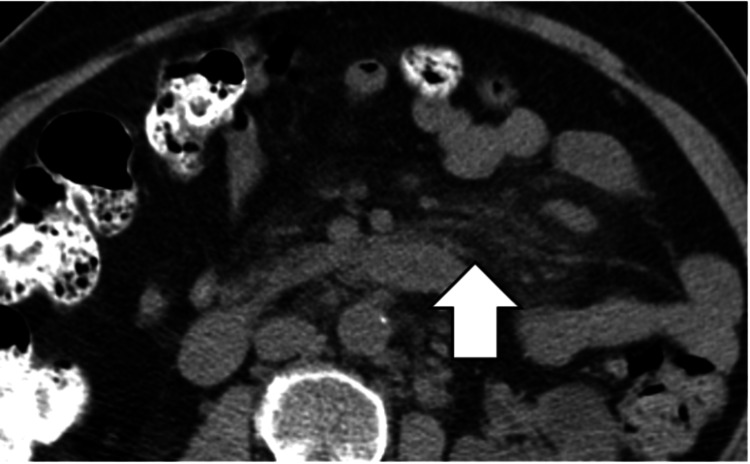
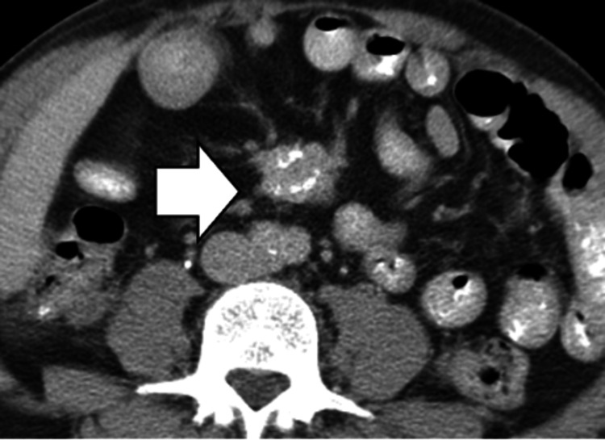
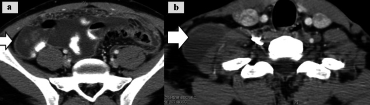

141 — Phúc mạc: cổ trướng, carcinomatosis vs lao / Peritoneum
Tags: pattern:phuc-mac vung:phuc-mac protocol:CT-bung-tiem incidentaloma:dich-o-bung
Mức chắc chắn (certainty): tổng hợp y văn (literature synthesis) — tổng hợp từ bài luận ảnh CT phúc mạc cấp (Louviere CD et al., Cureus 2025, PMC12640149) + ca lao phúc mạc giả carcinomatosis (Cureus 2026, PMC13502480); ca minh họa là ca nguyên văn lấy từ bài gốc.
1. Tổng quan — dịch + nốt + mạc nối là 3 chữ ký
- Cổ trướng đơn thuần (xơ gan/suy tim): dịch + không nốt + mạc nối mỏng.
- Carcinomatosis: nốt phúc mạc + bánh mạc nối (omental cake) + dịch + K nguyên phát (buồng trứng/dạ dày/đại tràng). Trên CT, tổn thương là khối đặc/hoại tử rải rác (matching) bám phúc mạc và mạc nối.
- Lao phúc mạc: dịch + nốt + hạch vôi hóa + viêm + lao phổi cũ — adenosine deaminase (ADA) dịch cao; hình thái CT có thể mạc nối dày (thể ướt wet) giống carcinomatosis.
- TẠI SAO bánh mạc nối quyết định: mạc nối dày đặc + nốt = gieo rắc ác tính đến khi chứng minh ngược lại (lao cũng có nhưng kèm vôi hóa/hạch + bối cảnh).

2. Gamut dịch + nốt phúc mạc
- Carcinomatosis: bánh mạc nối + K nguyên phát — CA-125 + PET + sinh thiết.
- Lao phúc mạc: nốt + hạch vôi + ADA cao + lao cũ — kháng lao (đừng mổ bụng vô ích).
- Mesothelioma phúc mạc: dày + amiăng + tiền sử — sinh thiết.
- Viêm xơ mạc treo (sclerosing mesenteritis) / viêm mô mỡ mạc treo (mesenteric panniculitis): đám mờ mạc treo (“misty mesentery”) có thể giả khối, xơ hóa và làm tắc tĩnh mạch mạc treo trên — không phải ung thư nhưng dễ nhầm.
- Cổ trướng đơn thuần: không nốt + xơ gan/suy tim — điều trị nguyên nhân.
3. Bảng so sánh phân biệt (ma trận đối chiếu)
| Thực thể (entity) | Hình ảnh điển hình (CT) | Chốt vào (rule-in) | Chốt loại (rule-out) | Xử trí |
|---|---|---|---|---|
| Carcinomatosis | Bánh mạc nối + nốt/matching + dịch + K nguyên phát | Omental cake + K đã biết + nốt đặc bám phúc mạc | Không nốt, mạc nối mỏng, nguyên nhân xơ gan rõ → cổ trướng đơn thuần | PET + sinh thiết + hóa trị |
| Lao phúc mạc | Nốt + hạch vôi + mạc nối dày (thể ướt) + dịch | ADA dịch > 35–40 U/L + vôi hóa/lao cũ + CA-125 tăng nhẹ | K nguyên phát + bánh mạc nối rõ → nghi carcinomatosis | Kháng lao, không mổ bụng |
| Cổ trướng đơn thuần | Dịch + mạc nối mỏng + xơ gan/suy tim | Không nốt + SAAG ≥ 1,1 g/dL + nguyên nhân rõ | Nốt/omental cake → tìm nguyên nhân ác tính | Lợi tiểu + albumin |
| Viêm xơ mạc treo / panniculitis | Đám mờ mạc treo, giả bao (pseudocapsule) mờ, nốt nhỏ lan tỏa; có thể vôi hóa + tắc tĩnh mạch mạc treo | Misty mesentery + pseudocapsule + không có K nguyên phát | Bánh mạc nối đặc + ổ hoại tử → nghĩ carcinomatosis | Theo dõi/sinh thiết nếu nghi |
| Mesothelioma phúc mạc | Dày phúc mạc lan tỏa, dạng “bọc” (rind) | Tiền sử phơi nhiễm amiăng + dày phúc mạc lan tỏa | Có K nguyên phát di căn → carcinomatosis | Sinh thiết + hóa trị |

Bấm để hiện đáp án (nhãn bệnh trong ảnh ghép)
- Trái (carcinomatosis): các khối đặc/hoại tử rải rác bám phúc mạc, di căn từ K nội mạc tử cung — Nguồn: Louviere CD et al., Cureus 2025 (PMC12640149, Fig. 16), CC BY.
- Phải (lao phúc mạc): mạc nối dày (mũi tên) kèm dịch, thể ướt — Nguồn: Louviere CD et al., Cureus 2025 (PMC12640149, Fig. 7), CC BY.
4. Protocol
- CT cản quang (nốt + mạc nối + nguyên phát) + dịch chọc (tế bào + ADA + SAAG).
- SAAG ≥ 1,1 g/dL = tăng áp cửa; < 1,1 g/dL = viêm/ác tính/lao. ADA dịch > 35–40 U/L gợi lao phúc mạc.
- Khi nghi carcinomatosis: PET-CT tìm K nguyên phát + sinh thiết định mô học; PET cũng dùng để ước lượng tải bệnh phúc mạc (PCI).
5. Biến thể bình thường và cạm bẫy
- Lao gọi nhầm carcinomatosis → mổ bụng vô ích — đọc ADA + vôi hóa + tiền sử lao trước khi mổ.
- “Misty mesentery” (viêm mô mỡ mạc treo) là bình thường/giả bệnh ở nhiều người — có giả bao mờ, nốt < 5 mm, kèm viêm mô mỡ; không đồng nghĩa ung thư. Chỉ theo dõi nếu không có dấu hiệu báo động.

- Viêm xơ mạc treo nặng có thể xơ co kéo và tắc tĩnh mạch mạc treo trên — nhìn như khối ác tính.
- Cổ trướng giả do dịch màng phổi (bài 110: dấu crus lệch/bare area) — xác định đúng khoang trước kết luận.
- Mesothelioma phúc mạc hiếm nhưng có — amiăng + sinh thiết.

6. Tự lượng giá — Blind Quiz
Ca 1 — Bệnh nhân có K nội mạc tử cung đã biết, đau bụng, dịch ổ bụng. Đọc CT.
- Gợi ý lâm sàng: K nguyên phát đã biết, bụng chướng.
- Câu hỏi: Mô tả tổn thương phúc mạc? 3 phân biệt (carcinomatosis/lao/mesothelioma)? Bước tiếp theo?
Bấm để hiện đáp án (findings + chẩn đoán)
- Dấu hiệu (findings): các khối đặc/hoại tử rải rác (matching) bám phúc mạc thành bụng và mạc nối, kèm dịch ổ bụng.
- Chẩn đoán (diagnosis): carcinomatosis phúc mạc — có K nguyên phát + bánh mạc nối; bước tiếp: PET-CT + sinh thiết + hóa trị (không phải lao khi đã có K nguyên phát).
- Nguồn ảnh: Louviere CD et al., Cureus 2025 (PMC12640149, Fig. 16), CC BY.
Ca 2 — Nữ trẻ, dịch ổ bụng + mạc nối dày, ADA 60 U/L, có lao phổi cũ. Đọc CT.

- Gợi ý lâm sàng: ADA dịch cao, tiền sử lao.
- Câu hỏi: Lao hay carcinomatosis? Dấu hiệu nào giúp phân biệt?
Bấm để hiện đáp án (findings + chẩn đoán)
- Dấu hiệu (findings): mạc nối dày (mũi tên) kèm dịch — thể ướt của lao phúc mạc; kèm hạch thượng đòn cùng bên trong ca gốc.
- Chẩn đoán (diagnosis): lao phúc mạc — ADA dịch > 35–40 U/L + tiền sử lao + hạch/vôi hóa; điều trị kháng lao, tránh mổ bụng chẩn đoán.
- Nguồn ảnh: Louviere CD et al., Cureus 2025 (PMC12640149, Fig. 7), CC BY.
Bài liên quan chéo
- 100 – Tổng quan hệ Bụng
- 110 – Giải phẫu bụng (crus/bare area — dịch màng phổi vs cổ trướng)
- 535 – Ung thư buồng trứng, phúc mạc & u Krukenberg (PCI, gieo rắc phúc mạc)
- 040 – Tràn dịch màng phổi (dịch 2 khoang)
- 162 – Tắc ruột (lao/xơ mạc treo gây tắc)
Ảnh
- Tên file
141_..._PMC12640149-FigN-...jpg, nguồn + giấy phép từng ảnh trongimages/CREDITS.md. Toàn bộ ảnh: CC BY 4.0 (Louviere CD et al., Cureus 2025, PMCID PMC12640149). - Ảnh ghép
images/composite_carcinomatosis-vs-lao-phuc-mac.jpgtạo bằngtools/make_composite.py, letterbox nền đen, giữ tỷ lệ. - Không tải Google Images / AuntMinnie; nguồn đóng chỉ dẫn link tại
sources.md.
Không dùng để chẩn đoán độc lập khi chưa có người hướng dẫn.